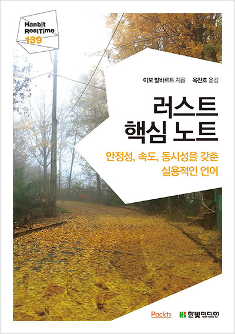
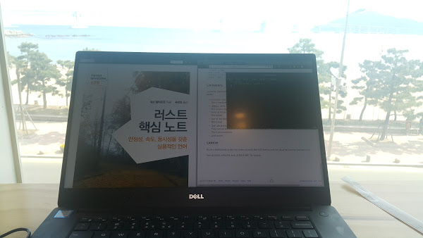

러스트 핵심노트 리뷰
처음 시작하는 러스트: 안전성, 동시성을 갖춘 실용적인 언어

Haskell을 공부하면서 함수형 언어의 특징인 순수 함수와 값의 불변성, 강력한 타입시스템 등의 여러 장점을 알게되었습니다.
그러나 Haskell은 임베디드나 극도의 최적화가 필요한 환경에서 사용하지 않는것 같았고 저는 프로그래밍을 하더라도 함수형언어로 하고 싶었습니다.
그렇기 때문에 지금은 어떤 특정 도메인에 종속되는 일을 하지 않지만, 나중에 임베디드나 최적화가 되어 있는 프로그래밍을 하기위한 함수형 언어는 없나 찾아보니 Rust란 언어가 있다는걸 알게 되었습니다.
그래서 이전부터 Rust를 공부하고 싶었지만 다른 일에 치여 미루고 미루다 보니 공부하지 못했었습니다.
그런데 이번 한빛미디어에서 진행하는 나는 리뷰어다에 당첨이 되어 러스트 핵심노트라는 도서를 받게됬었고 덕분에 반 강제로공부를 시작하게 되었습니다.
기본적인 구성
설치 및 소개
다음 내용이 기대되는 내용으로 구성되어 있습니다.문법
고유의 특이한 문법들을 많이 설명하고 있습니다. 이제까지 C언어 계열 문법만 보았으면 꼼꼼히 읽어 봐야합니다.동시성과 병렬성
러스트의 동시성과 병렬성모델에 대한 내용 입니다.Rust를 이용한 개발
러스트를 이용해서 어떤것을 무엇을 어떻게 만들 수 있는 지에 대한 설명을 짧게짧게 설명한 내용 입니다.
평가
초급자가 읽을것 같지는 않지만 굳이 말하자면 프로그래밍을 모르는, 막 프로그래밍 입문한 초급가 읽을 만한 내용은 아닙니다.
다른 언어의 책과 달리 에러를 일부러 띄우고 에러 메시지에 대한 설명을 하는 것이 좋았습니다.
에러는 일반적인 명령형 언어라면 정상적으로 실행되는 내용에 대한 것이 많았고 그만큼 Rust가 일반적인 명령형 언어랑 다르다는 것을 알려주는것 같기도 하네요.
외국어에 대한 한국어 표기가 미흡하지는 않은 것 같으나 한국어 표기 오른쪽에 작은 영어 표기가 있었으면 하는 부분이 많았습니다.
설명 중간중간에 연습문제가 꽤 있어서 공부하는데 많은 도움이 됩니다.
그런데 연습문제 결과 예제 코드가 책에 나와 있는 내용과 달라 조금 불변한 점이 있었습니다.
Rust가 왜 이렇게 작동하고 왜 이렇게 설계했는지에 대한 내용이 많이 나와서 이해하는데 많은 도움이 되었습니다.
책 초반에 엑터 모델을 언급하는데 책 내용에는 엑터 모델이 없어서 아쉬웠습니다.
대부분의 언어 기본서는 많은 api와 특징 들을 다루지만 이 책은 책 제목에 충실하게 아주 기본적인 내용만 다루기 때문에 깊은 공부는 따로 해야 할 것 같습니다.
그리고 오탈자가 꽤 있었습니다.
마무리

광안리에서 공부한 Rust!
책 내용은 딱 Rust에 대해 알기에 좋았습니다.
그렇죠 이제는 제가 알아서 찾아서 공부해야죠 ㅎㅎ
Rust의 가능성에 대해서도 알고싶었지만 그 부분에 대한 내용은 많이 보지 못한 것 같은게 조금 아쉽네요.
Rust는 고유의 특이한 문법들이 많았고 Kotlin을 공부하지 않았더라면 문법적인 부분에서 생각하는데 시간이 좀 더 걸릴뻔 했네요.
Rust자체는 여러 언어의 재밌는 기능들을 많이 사용하는게 좋았습니다.
중간중간에 C, C++, Java, Haskell, Kotiln 느낌이 많이 들어 재밌었습니다. (물론 Kotlin이 더 늦게 나왔지만 이전에 Kotlin을 공부해서 ㅎㅎ).
최적화가 필요한 함수형 언어를 하기위해서 Rust는 계속 공부해 봐야할 언어인것 같습니다.
추천
- Rust가 궁금한데 간단하게 보고 싶은 분
- 급하게 Rust 코드를 봐야하시는 분